기본 덱 구성은
1번 2버
2번 1버
3,4번 3버
5번 서포터
로 작성했음
배치는 개인 취향이지만 이 글에서는 해당 자리에 들어갈 캐릭이
위 룰대로 들어간다고 참고해주면 좋음
단, 1번에 크라운을 넣는것은 상황에 따라 필수
(파티 힐이 있을때 풀피이면 가장 왼쪽 캐릭에 힐이 들어가기 때문에 크라운 버프가 켜진다나 뭐라나)
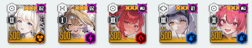
가장 무난한 베스트5
각 포지션별 고트들만 모인 파티
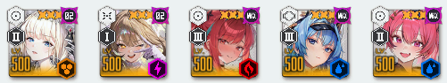
4번 각설 자리에 애장품 헬름이 들어가는 것도 가능하다
단, 아니스가 나오고 나서는 버충이 여유로워져서
헬름보다 스테이지에 맞는 우코 딜러 넣는것도 좋다
자기 투력 상황을 보고 생각하자
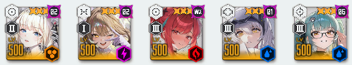
5번 서포터로는 메스트 대신에 애장품 프리바티도 좋다
메스트는 정말 극한의 딜링이 필요할때 사용하는 느낌
애프바도 크게 안밀린다
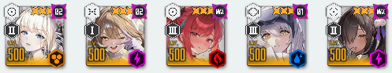
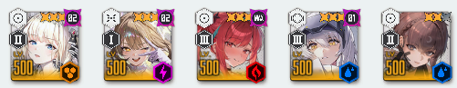
보급형 서포터들
나가는 힐을 크라운에게 줘서 버프를 키게 해주고
젖닌은 토템 디버퍼로 쓸만하다
근데 애헬름이 있다면 서포터로 애헬름이나 쓰자
육성안된 나가,젖닌은 투력이 떨어져서 오히려 안좋을 수가 있다
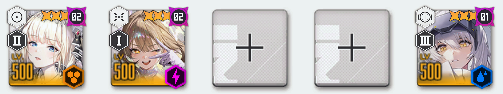
4번 자리일때와 마찬가지로 서포터 자리에 애헬름 대신에 각설이 들어갈 수도 있다
3,4번을 우코딜러로 배치해야 하는데 버충이 낮은 편성일때 주로 쓴다
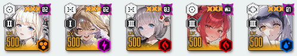
작열
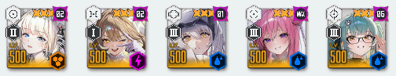
수냉
수로시가 없으면 비우코 딜러중 제일 쎈 라피나 베스티를 넣자
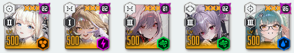
풍압
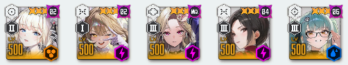
전격
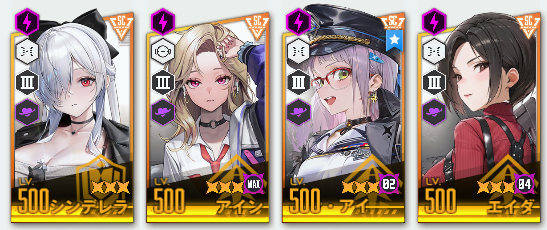
웡이 없으면 이 넷중 둘을 넣어야한다
이중 비보스전 스테이지 성능은 아인이 고트
신데는 다수전에 약하지만 보스전에서 제일 강하다
네온도 체급이 높아서 굉장히 쓸만하다
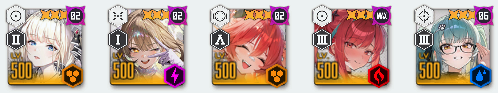
철갑
레후가 너무 약하다 싶으면 베스티를 쓰는게 좋을 수도 있다
베스티는 비우코 상황에서도 방어무시 데미지로 인해 언제나 좋은 모습을 보여준다
폭발 범위도 넓어서 비보스전이 굉장히 편함
진짜 가끔 시작하자마자 극한의 버충이 필요한 순발력 스테이지가 있는데
그럴때는 레후의 엄폐물 관통 버충이 가장 빠르긴 하다
할배들 과거 영상보면 레후로 몸 비트는거 보면 재밌음
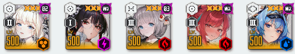
특정 패턴이 너무 아플때는 애목단을 기용해야 한다
버충이 부족해지니 5번 서포터가 헬름이나 각설이로 고정되며
이런 스테이지는 힐이 필요한 경우가 많아서 애헬름을 넣고
비상시에 헬름 버스트로 회복하는 것도 고려하자
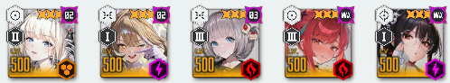
가끔 애목단 키고도 도저히 못버티겠다 싶은 곳은 이런식으로도 데려간다
아니스가 재진입을 쓰면서 버충을 담당하다가
도발킨 애목단이 죽고나면 아니스를 스페어 1버로 사용할 수 있기 때문
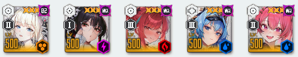
애목단을 쓰면서 딜도 힐도 필요하면 딜러 자리에 헬름이나 각설이를 올리고
서포터를 메스트로 데려가는 방법도 있다
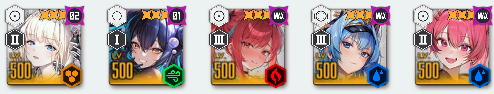
(3,4,5번은 무시하삼)
특정 니케의 패턴을 저지해야할 필요가 있다면 1버에 세이렌을 기용한다
즉사빔, 방패 등등도 캔슬 시킬 수 있지만
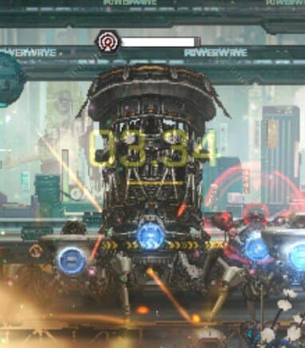
주로 이 침묵을 걸어서 버스트 발동을 막는 놈이 나올때 기용한다
세이렌 스턴이 있으면 굉장히 좋다
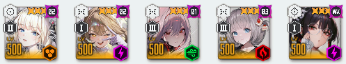
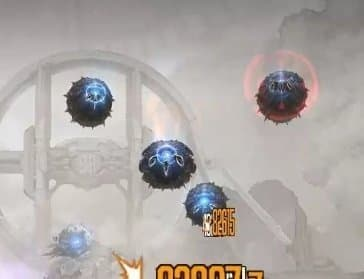
탱탱볼을 잡을때는 분배딜이 필요하고 흑련이 필요하게 된다
이번에 나온 아니스가 흑련이랑 굉장히 궁합이 좋다
다만 아니스의 자동 공격이 탱탱볼을 발광하게 만드는 단점이 있으니 주의
1버로는 목단을 추천하는데
목단이 도발로 탱탱볼을 받아내기 때문에 사망 확률이 매우 높다
아니스를 스페어로 데려가자
목단이 탱탱볼에 도발을 걸었을때 엄폐해서 엄폐물 체력까지 알뜰살뜰 다 써주자
탱탱볼이 적당히 나오면 흑련+리버로 차속버프도 몰아주는게 좋지만
탱탱볼이 끊임없이 나올때는 비버스트 흑련 혼자서 처리하기 힘들때가 있다
근데 다른 분배딜러들은 나사가 하나씩 빠져있고 투력이 낮을 가능성이 높다
이럴땐 베스티를 넣어주면 압도적인 폭발 범위로 탱탱볼을 쓸어버린다
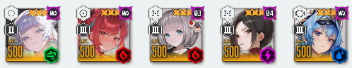
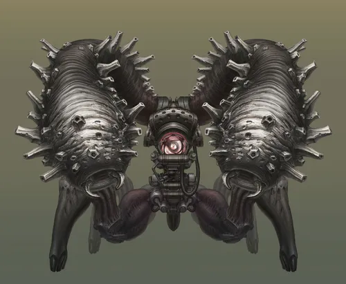
뿡뿡이가 대다수 나와서 헬름 힐만으로 해결이 안될때는
나유타 + 웡을 사용하는 방법도 있다
웡이 버스트를 킨 3버에게 흡혈 능력을 제공 -> 나유타가 5명에게 힐 분배로
파티 전체 체력이 계속 파바박 차오른다
근데 어디까지나 흡혈이기 때문에
가끔 타수가 적은 런쳐,스나 들의 공격 사이사이에 사고가 나는 경우도 있는데
(보통 하드 스테이지 극한의 빨투력에서 뿡뿡이 6마리 이렇게 나올때 힐이 못따라갈때 있음)
이럴때는 1버 라피를 써주면 라피도 흡혈을 받기 때문에
머신건이 두다다다 피를 채워준다
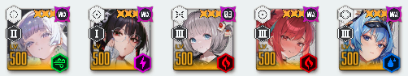
웡이 없다면 아쉬운대로 목단 + 나유타를 쓰자
웡만큼은 아니지만 목단도 1버 발동시 흡혈이 있기 때문에
나유타가 분배해줘서 파티 전체 회복이 가능하다
목단의 받뎀감으로 인해 버티기도 수월하고 AR이라 타수도 좋다
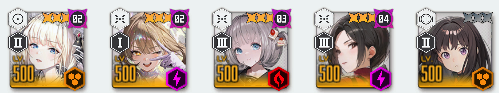
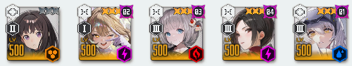
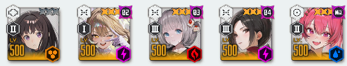
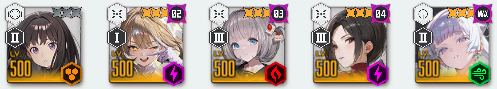
빨투력 환경에서 방무뎀을 극한으로 이용하는 덱들
보통은 최저투력이나 하드 스테이지에서 쓴다
타키나는 사실 자가 버스트를 굳이 안켜도 돼서 2버로 크라운을 쓰는데
가끔 미컨 같은 곳에서 타키나 자신도 방무뎀이 필요하고
극한으로 딜을 뽑기 위해 메스트를 써야할때는 타키나가 자가 버스트를 쓴다
웡에 나유타를 넣으면 나유타+웡의 파티 전체힐 분배도 가능하다
아니스 나오기 전에는 엄폐물 버충이 안되는 맵에서
버충을 위해 5번에 헬름 각설이를 넣는 경우도 있었는데 요즘은 안쓰지 않을까
아 왜 자꾸 웡 쓰래요
뉴비가 웡이 어딨어요
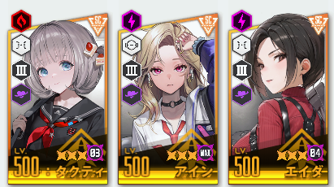
현재 방무 3대장인 셋
웡이 없으면 아인을 키우자
끗
더 MZ한 덱 있으면 댓글에 써주삼